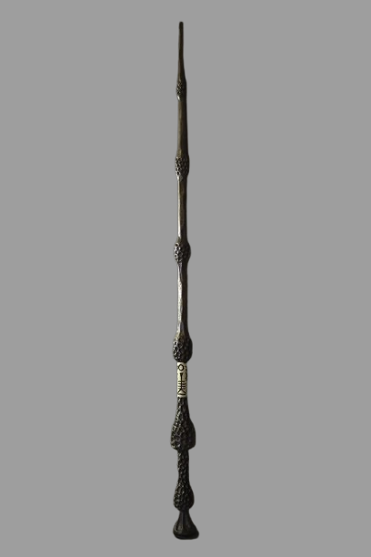

Varita de Sauco
La varita de Sauco, hecha de madera de sauco y con un núcleo de pelo de Thestral, es una de las tres Reliquias de la Muerte. Es conocida por su inmenso poder, habiendo sido poseída por magos como Dumbledore y Voldemort, lo que la convierte en la varita más poderosa del mundo.